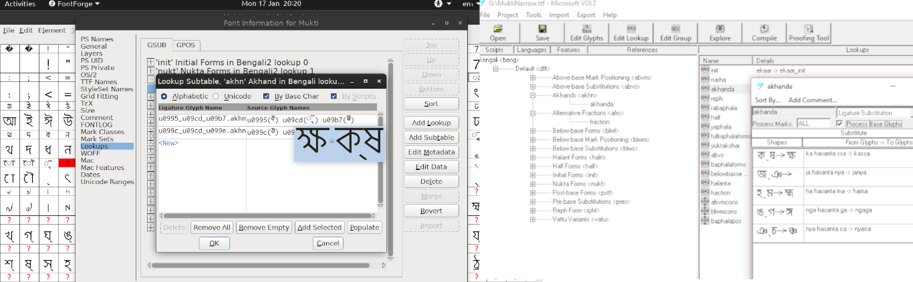
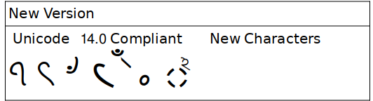
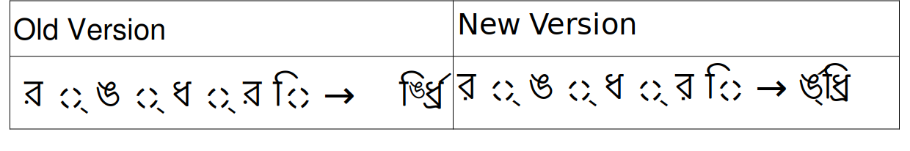
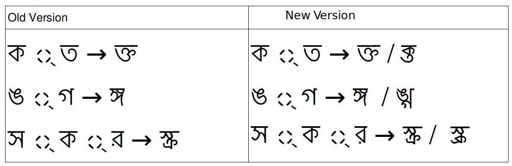
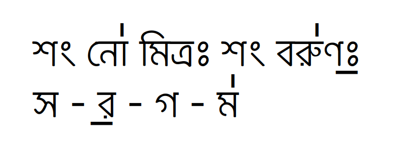
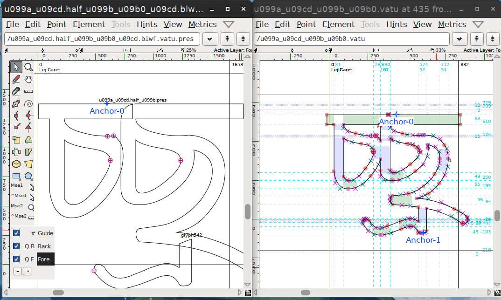
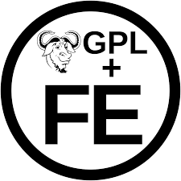

by Dr Anirban Mitra
TL;DR: Mukti Open Source OpenType Bengali Font Version 3.0 with lots of new features is out and is avalable for download at github site
Long Post Ahead
Way back in 2002, I got interested in Digital Typography, mainly in order to produce a font to view Bangla Documents in my Windows 98 PC. In the process I came in contact with other members of Free Bangla Font Project like Sayamindu and Deepayan and with their help made 4 fonts, Ani, MitraMono, Mukti and Mukti Narrow. Mukti had to be withdrawn due to copywrite issues with the base glyphs, (which resembled Linotype Bengali, which were later used by Microsoft and Monotype to create Sonar Bangla font for Windows). However, MuktiNarrow was well appreciated and was used by Ankur Project as default UI font when they came out with AnkurOs, world's first operating system with a Bangla user interface. Even now version 0.94 of Mukti Narrow is available with Bengali pack of all Debian based Linux distros. I wrote about this experience in an article in Opensource.com
When Corona Pandemic drastically reduced patients in my chamber, I thought of using some of the free time to upgrade the font, now renamed only Mukti. Previous two such attempts in 2006 with version 1.99 and in 2015 with version 2.01 resulted in appearance of more bugs than usefullness mainly due to hastiness with which I did it. Moreover the reluctance of indic group of Debian to incorporate the newer version in stead of the old one also damped my morale. This time however I took my time and tried to remove as much bugs as possible with introduction of newer features .
Here are the most important changes in Mukti Version 3.0 compared to MuktiNarrow 0.94
1. Shift to Open Source editor: - MuktiNarrow was developed using FontCreatorProgram and Microsoft VOLT in Windows98. Mukti is re-edited in open source font editor Fontforge in Ubuntu Linux. Now I can proudly say No non-free/ closed source programs are used in creating the font.

2, Change in Technical details :- Alongwith change in editors the EM of the font is changed from 2048 to 1000 and the curves are saved as cubic bezier which are converted to quadratic during production of ttf fonts.
3. Upgrade to Unicode 14.0 standard - MuktiNarrow was created at times when Unicode version 4.0 was in vogue. A few characters are added in Bengali block since then, notably Khanda Ta, Abbreviation mark etc . They are added in the font.

4. Shift from Version 1 to Version 2 of Bengali OpenType Font specification :- This required complete overhauling of the OpenType GSUB tables. However it will help in proper postioning of reph and left sided matras in case an conjuct is absent in font.

5.Support for Assamese language Assamese / Ahamia specific forms which was absent in Mukti Narrow is added in this version
6. Support for both traditional and modern form of conjucts:- Alternate modern "schoolbook" forms are are available as Stylistic alternate

7. Addition of Vedic stress Marks:- Vedic Stress marks to indicate voice modulation for writing Vedic hymns in Bangla as well as musical notations are added in the font.

8. Addition of autohinting by Fontforge:- It will make the font look crisper in small points in screen compared to MuktiNarrow which was not hinted and Antialiased in all sizes.
9. Removal of Latin glyphs:- Latin glyphs sourced from GNU-Unifont was added to MuktNarrow as it was a necessary condtion to be able to use and edit the font in Windows 98 platform which did not support pure Unicode font. As modern operating systems accept pure unicode fonts, latin glyphs are removed from the font
10. Addition of few new conjuncts - as per juktakshar list
11. Removal of references and overlapping Instead of forming conjuncts as combination of reference of component glyphs, conjuntcs are formed after removing overlap between component glyphs so that white area does not appear in large point sizes.

and 12. Various bugfixesThe font is now licenced under GPL3+ with font exeption

For comments, bug reports feature request please visit our issues section